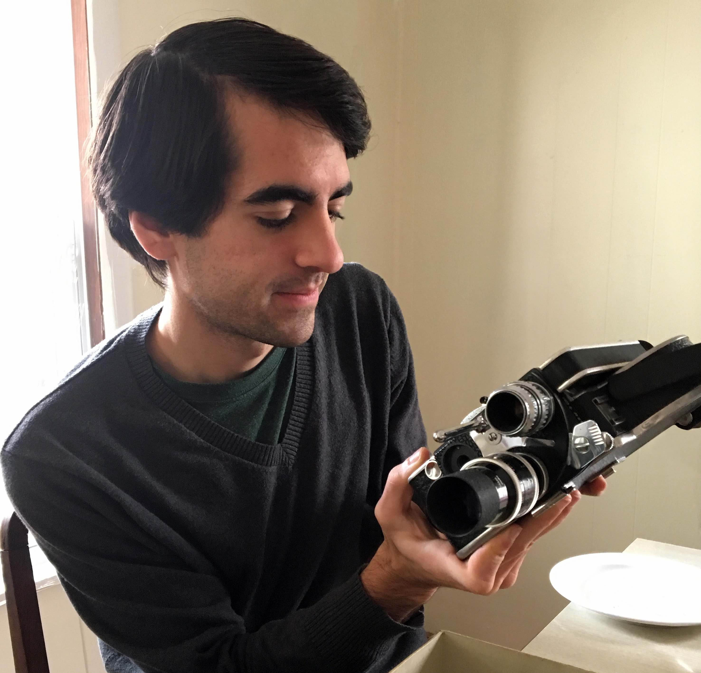

Ben Cowper
cowpervideos@gmail.com

I am always seeking opportunities to collaborate. At the moment I'm most interested in narrative and documentary film, audio storytelling, interactive or experimental installation, and commercial work. If you'd like to work together you can send me an email at cowpervideos@gmail.com
I have always loved working with video, and began producing professional work as early as 2007. Since then I have worked on over 100 projects for a wide variety of individuals, artists, and commercial clients including: Yale University, Hampshire College, Mount Holyoke College, PBS American Masters, Cambridge University Press, Northampton Chamber of Commerce, and The Global Fibrosis Foundation.
A more complete list of my film credits can be found here.
Areas of Technical Expertise:
Cinematographer
5DmkIII w/Magic Lantern, Blackmagic Cinema, Canon Cinema, GoPro, 16mm Bolex, Super 8 (hand processed)
Editor, Colorist
Adobe Premiere, After Effects, Photoshop, Final Cut Pro, DaVinci Resolve
Audio Engineer
5.1 surround and stereo recording/mixing (ProTools, Audition, Logic)
Web Designer
HTML, CSS, Squarespace, Drupal, Wordpress
Lighting Designer
Designing and drawing lighting plots for film and theatre productions
Photographer
Digital, 35mm, medium format, and large format film (various cameras and hand processing techniques)
Archivist
Digital telecine of 16mm and Super 8 film. Preserving and authoring archaic media formats
Live Streaming
Live switching of audio and video for television, theatre, and conferences. Designed and built a 4 camera live TV production and green screen studio. (Blackmagic ATEM, Ustream, Mediasite)
IT and Academic Technology
Python, Apple Computers, Raspberry Pi, Google Suite, LaTeX, Arduino, Microsoft Office, Drupal, Canvas, Moodle
Note: there is another Ben Cowper who makes films. He lives in New Zealand and we are not the same person.